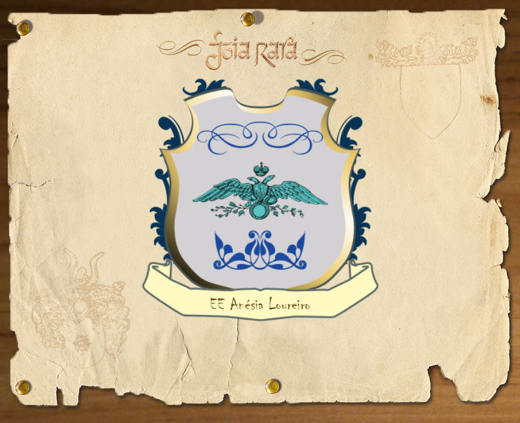

A Escola Estadual Professora Anésia Loureiro Gama começou a funcionar no ano de 1962 como Grupo Escolar “Vila Império”, passando a receber o nome atual em homenagem a educadora Anésia Loureiro Gama que nasceu em 04 de junho de 1890 em Tatuí.
“Era de manhã, carroças lerdas passavam pela rua José Bonifácio estufadas de algodão em rama, a caminho da fábrica de tecidos do velho Manoel Guedes Pinto de Melo. Uma semana depois do evento (como se dizia outrora), o pai, Luciano Loureira de Melo e a mãe, Renes de Barros Melo, atravessaram contentes o jardim da Matriz rumo à Igreja de Nossa Senhora Conceição a fim de que a menina (três quilos e pouquinha coisa mais) fosse batizada”, assim é descrito o nascimento e o batismo de Anésia por seu filho Mauricio Loureiro Gama, em seu livro “Risonha & Franca” dedicado a memória da mãe.
Quando pequena gostava de brincar de escolinha no fundo do quintal com suas bonecas. Foi estudar em Itapetininga onde conheceu o farmacêutico Teófilo Gama. Apaixonados casaram-se. Já casada inicia seu curso de magistério. Pouco tempo depois do término do curso, morre seu esposo num triste acidente. Ficou viúva com 4 filhos para criar com o salário de professora. Empreendedora e dedicada a educação, Anésia pegou dinheiro emprestado para criar seu próprio curso de professores, chamado “Externato 07 de setembro”. “Num domingo tranqüilo, sem adeus, não querendo incomodar os que ficavam, fechou os olhos para sempre”. Morreu no mês de abril de 1963.
Dados Históricos da Legislação:
Decreto Nº14 publicado no Diario Oficial de 15/12/1961: dá-se a criação da escola.
Decreto Nº 8437 publicado no Diário Oficial de 07/09/1962: dá-se a instalação da escola.
Lei Nº 8191 de 19 de junho de 1964: “Dá-se a denominação de “Professora Anésia Loureiro Gama” ao Grupo Escolar “Vila Império” de São Bernardo do Campo publicado no Diário Oficial de 23/06/1964.
Resolução SE 24 publicada no Diário Oficial de 29/01/1976: passa a denominar-se Escola Estadual de Primeiro Grau “Profª Anésia Loureiro Gama”.
Parecer CEE 67/98 publicado no Diário Oficial de 21/-3/1998: passa a denominar-se Escola Estadual “Profª Anésia Loureiro Gama”.

Tocador de som abaixo:
Tocador de video abaixo: